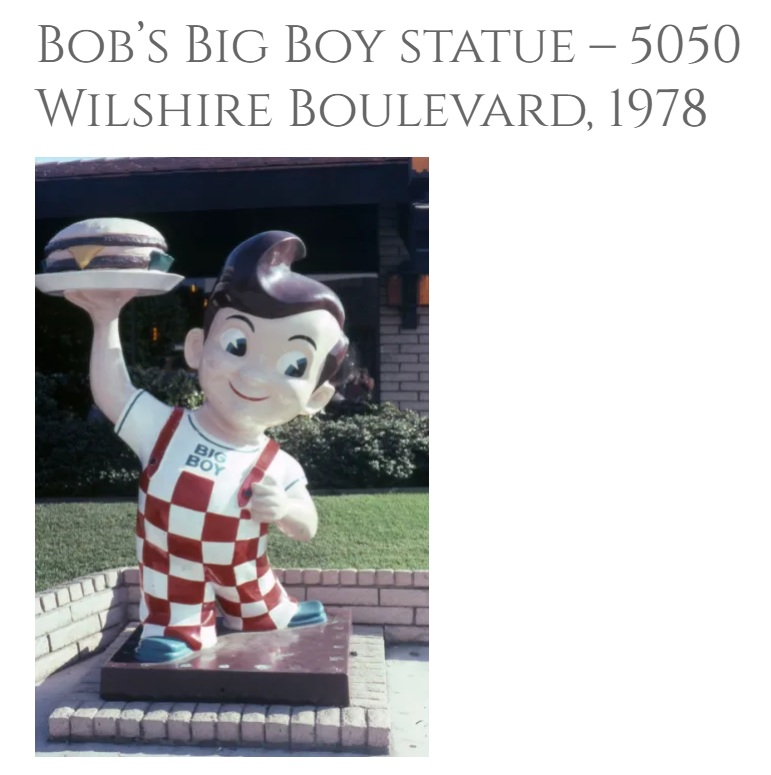

Literature
Ron English, Original Grin: The Art of Ron English (Paris: Cernunnos, 2019), p. 24. ISBN 978-2374950938.
Notes
This work references Bob’s Big Boy; a representative image is available here.
Ancillary Documentation

Ron English, Original Grin: The Art of Ron English (Paris: Cernunnos, 2019), p. 24. ISBN 978-2374950938.
This work references Bob’s Big Boy; a representative image is available here.
